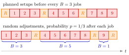

Server Adjustment¶
Definition¶
A server adjustment is a short task, such as replacing a blunt knife or making an unexpected phone call, that the server must carry out between two jobs at a moment that cannot be planned. It is a non-preemptive outage: it never interrupts a job in service.
The course model: after job an adjustment is needed when , where with , so . The adjustment takes time , with mean and variance . The net service times , the adjustment times and the indicators each form an i.i.d. sequence, and the three sequences are independent of each other. Job then occupies the server for the effective service time
The number of jobs served between two consecutive adjustments counts the trials up to and including the next success, so has the first success distribution with . The notes call geometric; on this site that name is reserved for the count of failures.
Interpretation¶
An adjustment is a server setup whose timing is left to chance. With setups the server processes exactly jobs per outage; with adjustments the count between outages is random, while the long-run fraction of outages per job is the same .

Both rows of the figure contain nine jobs and three outages , so the average number of jobs per outage is in each. In the top row a setup precedes every batch of jobs. In the bottom row each job is followed by an adjustment with probability , and this sample path gives , and : the outages are as frequent, but irregularly spaced.
Hence the mean effective service time is the same as for setups, but its variance is larger. Conditioning on and applying Adam's law and Eve's law gives an extra term , which is the variance of the Bernoulli switch scaled by the mean adjustment. For it is positive whenever ; it would vanish only in the excluded extremes , when nothing is random about whether an adjustment follows. The independence assumptions matter: if adjustments became more likely after long jobs, and would be correlated and the variance formula would need a covariance term.
Adjustments do not change the arrivals, so and stay as they are, and Sakasegawa's formula only needs and . A common slip is to compare policies by variability alone: planning adjustments removes the extra term, but if planning makes the outages more frequent, the higher load can cost far more (Example 3).
Key Results¶
- Mean effective service time (6.3.1): , the same as for setups with batch size (Setup Effective Service Time).
- Variance (6.3.2): . Planned setups every jobs give , which with lacks the last term.
- Load and stability: , and the single-server queue is stable only if .
- Waiting time (): insert and into Sakasegawa's formula, , and for the sojourn time.
- Fewer but longer adjustments with the same keep but raise , so they increase (TF 6.3.4).
Examples¶
1. Machine with random outages (Exercise 6.3.6). Jobs arrive as a Poisson process at per working day of two -hour shifts, so per hour and . Net service has and (hours); an outage follows on average every jobs, so , with and . Then
Hence and hours, so hours.
2. Fewer but longer adjustments. Keep Example 1 but let adjustments occur half as often, , with twice the duration, , so and . The mean and the load do not change, but
so and hours instead of .
3. Planning is not automatically better (Exercise 6.3.7). Suppose the adjustment of Example 1 is instead planned after every jobs and takes a constant hours. Now , and . The variability is much lower, but , so and
The increase in load outweighs the reduction in variability: the outages per job rose from to .
Prerequisites¶
- Setup Effective Service Time
- Sakasegawa's Formula
- First Success Distribution
- Eve's Law: Total Variance
Related Concepts¶
- Non-Preemptive Outage
- Server Setup
- Server Failure
- Preemptive-Outage Effective Service Time
- Squared Coefficient of Variation
- Server Load
Sources¶
- Stochastic Operations Research · Week 7
- N. D. van Foreest, Sample Path Analysis and Simulation of Stochastic Systems, Section 6.3
Aliases: random adjustment, unplanned adjustment, adjustments between jobs, random interruptions between jobs Keywords: F_i \sim \operatorname{Bern}(p), \mathbb{E}[S] = \mathbb{E}[S_0] + p\mathbb{E}[R], p(1-p)(\mathbb{E}[R])^2, effective service time, non-preemptive outage, knife replacement, unexpected phone calls Symbols: element of, lambda, rho
Last updated: 29 October 2026 20:42
Server AdjustmentNon-Preemptive OutageSetup Effective Service TimeSakasegawa's FormulaFirst Success DistributionEve’s Law: Total VarianceServer SetupServer FailurePreemptive-Outage Effective Service TimeSquared Coefficient of VariationServer Load